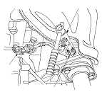

Primary HO2S Replacement
Special Tools Required
O2 sensor socket wrench
07LAA-PT50101
Disconnect the primary HO2S 4P connector (A), then remove the primary HO2S (B).
Install the primary HO2S in the reverse order of removal.
